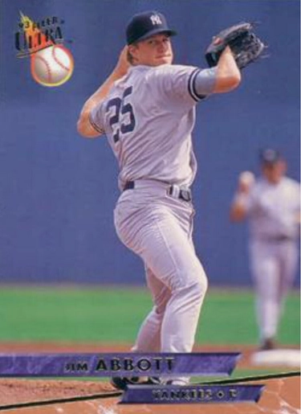

Jim Abbott
Career Highlights & Facts
(Facts are AI-generated and may require verification)
- Performed at the highest level of professional baseball despite being born with a right arm that ended at the wrist.
- Mastered a unique technique of switching a glove from the end of a right arm to a left hand in seconds to field balls.
- Threw a no-hitter in a professional contest while playing for a team in the largest city in the United States.
Would you like to find out more about Jim Abbott?
Read Player Biography
Jim Abbott
January 4, 2012
/
in
BioProject - Person
Tony Conigliaro Award
/
by
admin
This article was written by
Rick Swaine
Left-handed pitcher Jim Abbott is probably the most celebrated athlete with a major disability of his era. Born with a deformed right arm, Abbott was already a national hero before signing a professional contract with the California Angels in 1988. As a sophomore pitcher for the University of Michigan in 1987 he was named the best amateur athlete and the top amateur baseball player in the nation, and became the first U.S. pitcher to beat the Cuban national team in Cuba in 25 years. As a junior he garnered a gold medal as a member of the 1988 U.S. Olympic baseball team, crowning his amateur career by beating Japan in the final game in Seoul, South Korea. In his first season in professional baseball, he won a spot in the starting rotation of the pennant-contending Angels without an inning of minor-league seasoning and established himself as a topflight major-league pitcher.
Abbott’s right arm ends about where his wrist should be. He doesn’t have a right hand, just a loose flap of skin at the end of his underdeveloped arm. Otherwise, he was a strapping 6-foot-3 200-pounder in his prime whose physique could have served as a model for the ideal baseball player.
Abbott, who retired in 1999, pitched with a right-hander’s fielder’s glove perched pocket-down over the end of his stubbed right arm. At the conclusion of his delivery, he would deftly slip his left hand into the glove and be ready to field the ball. After catching the ball, he would cradle the glove against his chest in the crook of his right arm and extract the ball with his left hand, ready to make another throw. Observers invariably marveled at how smoothly and efficiently he could catch and throw the ball with one hand.
Jim Abbott’s parents were still teenagers when he was born in Flint, Michigan, on September 19, 1967. Having a child at such as young age was difficult enough, especially a child with a disability, but Mike and Kathy Abbott resolved to make their son’s life as normal as possible. Mike Abbott sold cars and worked as a meatpacker and Kathy took courses at home while raising Jim. Eventually both parents finished college and went on to successful careers, Mike in management and Kathy as a teacher and later an attorney. Jim’s parents always encouraged him to try things and helped him acquire confidence. “We decided that if Jim wanted to [play sports] then to let him try,” said Mike Abbott in a 1998
USA Today
interview. “I helped out with some things. But in the end it was all Jim. It had to be.”
1
Jim started showing an interest in sports at an early age. Trying to nudge him toward a sport that didn’t depend on the use of his hands, his parents bought him a soccer ball. But, Jim didn’t really like soccer. After all, every other kid in the neighborhood was playing baseball so that’s what he wanted to do. Ironically, it was Jim’s younger brother, Chad, who became a soccer player.
So Jim Abbott began developing the remarkable hand-eye coordination that would allow him to do with one hand what others did with two. He spent hours throwing a rubber ball against a brick wall and catching it on the rebound. His father helped him develop the technique for handling his glove-hand switch which allowed Jim him to throw and catch the ball with the same hand. Over the years he continued this drill, moving closer and closer to the wall and making the glove transition faster and faster.
When Jim began school, he was fitted with a mechanical hand made of fiberglass and metal. But he hated the prosthesis, which he called a “hook,” because it frightened some of his classmates and made him self-conscious. Eventually his parents stopped making him wear it.
At the age of 11, Jim joined a Little League team and threw a no-hitter in the first game he pitched. Despite his early success, most people figured the competition would soon pass him by. In fact, at every step, from Little League on, he kept hearing that his playing days would probably end at that level. But at each new level, Jim proved his doubters wrong. When he entered high school at Flint Central, his new coach doubted Jim would be able to defend his position adequately. But Jim actually fielded well enough to play first base and the outfield when he wasn’t pitching.
Even his hitting was exceptional. Jim batted from the left side, wrapping his left hand around the bat and the stub of his right arm. He was able to generate remarkable power, blasting seven homers and batting an excellent .427 as a senior. On the mound that year he won ten games and lost three with an incredibly low 0.76 ERA and averaged more than two strikeouts per inning pitched.
Jim was also the backup quarterback for Flint Central until the end of his senior year when he started the last three games, passing for 600 yards and six touchdowns. In addition, he was the squad’s punter, averaging 37.5 yards per kick as a senior. His first national exposure came when his high school football accomplishments were featured on NBC’s
The NFL Today
pregame show.
Abbott was drafted by the Toronto Blue Jays out of high school in the 36th and last round of the draft, but turned down their $50,000 bonus offer to attend the nearby University of Michigan. Despite the major league offer and his high school achievements, colleges with top baseball programs didn’t heavily recruit him. There were still some reservations about his disability, and Abbott himself admitted to having some initial doubts about his ability to play college baseball. But they were quickly dispelled. As a freshman he was named Most Courageous Athlete for 1986 by the Philadelphia Sportswriters Association after posting a record of six wins against two losses. The season was not without embarrassment, however. After his first college game, the modest young hurler was mortified and suffered an unmerciful razzing from his teammates when the press held the team bus up for an hour to interview him.
Over the next two seasons, Jim continued to develop as a pitcher and began to think seriously about a career in professional baseball. In 1987 he pitched the Wolverines to first place in the Big Ten Eastern Division standings and then to the conference championship and threw a shutout in the NCAA tournament. For the season he won 11 games against three losses. He then earned a spot on the U.S. national amateur baseball team, Team USA, and on the warm-up tour threw his three-hit complete-game victory against the vaunted Cuban team in front of 50,000 spectators. In the Pan American Games, he not only carried the flag for the U.S. delegation, but also won two games without giving up an earned run as Team USA captured a silver medal. For the year, his efforts earned him the Sullivan Award, being chosen over hurdler Greg Foster and basketball star David Robinson as the outstanding amateur athlete in the country. He then beat out future major-league stars
Jack McDowell
,
Robin Ventura
, and
Ken Griffey Jr.
for the coveted Golden Spikes Award, given to the top amateur baseball player.
Abbott had another fine season at Michigan in 1988, becoming the first baseball player to ever be named Big Ten Conference Player of the Year. He then pitched the U.S. Olympic Team to victory over Japan with a 5-3 complete-game effort, which he still considers his biggest thrill in sports.
After his Olympic triumph, Abbott decided to forgo his last year of college eligibility to enter the professional ranks. He was selected by the California Angels with the eighth pick in the first round of the amateur draft and negotiated a $207,000 bonus. As happened whenever Jim moved up to another level in sports, skeptics came out of the woodwork to question whether a player with one arm could perform at the next level. The familiar old questions about his ability to defend his position resurfaced.
On bunts and slow rollers Abbott often didn’t have time to field the ball with his glove and make the transfer. So he usually discarded the glove and fielded bunts barehanded. In high school, an opposing coach once ordered the first eight batters to bunt. After the first one reached base, Jim shut down the bunting game by retiring the next seven in a row. Of course, he had to pass the same test in college and the big leaguers would also give it a try. But once again, Abbott answered with great coordination and quick reflexes.
The 1989 edition of the Angels that Abbott joined as a rookie was a talented team — legitimate pennant contenders. They’d finished fourth to Kansas City in 1988 and featured a solid pitching staff that had been bolstered by the off-season acquisition of veteran ace
Bert Blyleven
, who already had more than 250 major-league victories under his belt. It didn’t seem likely that a raw, 21-year-old rookie could crack the rotation.
Up to that time only 15 players had made their professional debut in the major leagues since the establishment of the amateur draft in 1965. Still fewer enjoyed successful careers while most quickly faded into oblivion. Everyone assumed Abbott would be farmed out to gain needed experience, but he made the team out of spring training and edged into the starting rotation. Injuries to other members of the rotation, as much as his own performance, allowed Abbott to make the opening day roster, but there was still a good deal of second-guessing. Many felt Abbott’s retention was more about public relations than fielding the best roster.
It’s true Abbott was a media sensation. His first spring appearance was in a “B-game” that had to be moved from a practice field to the main stadium to accommodate the throng of fans and media representatives. At the postgame press conference, Abbott patiently discussed his pitching/fielding motion. “I’ve been doing this since I was 5 years old. Now it’s as natural as tying my shoes,” he said to reporters, leaving them to contemplate the complexity of tying one’s shoes with one hand.
2
As with the beginning of every new phase in his career, Abbott’s first regular season start was a major event. The media, including four television crews from Japan, converged on Anaheim Stadium in full force for the grand debut. Jim lasted less than five innings and racked up his first major league loss, but left to a standing ovation from the huge crowd.
Baseball America
ranked his debut second only to
Jackie Robinson
‘s breaking of the color barrier in terms of historical significance.
After another defeat, Abbott beat the Baltimore Orioles in his third start and settled down to pitch good baseball the rest of the season. He ended the year with 12 wins against the same number of losses. The dozen victories were the most major league wins by a pitcher in his first professional season since long-forgotten
Ernie Wingard
won 13 in 1924 for the old St. Louis Browns before fading into obscurity.
The Angels finished the 1989 season in third place and Abbott was voted the club’s Rookie of the Year. He was also named the Most Inspirational Player by the Anaheim chapter of the Baseball Writers Association of America.
Abbott’s deft handling of the constant public pressure may have been his most impressive accomplishment, however. Handsome and articulate, he was interviewed countless times by the major networks and publications. He turned down repeated book offers, and received tons of mail — including a personal telegram from
Nolan Ryan
before his first start. Hall of Famers
Ernie Banks
and
Bobby Doerr
asked for his autograph, and 363-game-winner
Warren Spahn
called him his hero. Jim studied communications in college and was better prepared than most 21-year-old rookies to handle the crush. His maturity and cooperation with the press and the public won him a legion of loyal supporters and he naturally became an inspirational role model for kids with all kinds of disabilities.
Questions about his ability still remained, however. Abbott had trouble holding runners on base and his fielding was weak. He was the second easiest pitcher in the league to steal against and he had a rather low fielding percentage. By his own admission, he missed many plays that he should have made.
Abbott experienced a disappointing 1990 sophomore season, compiling a 10-14 won-lost record. He got off to a terrible start in 1991, suffering four straight losses to begin the season after an unimpressive spring performance. Calls for his demotion to the minors lit up the phone lines to the sports talk shows, but the club stuck by him and he managed to turn the corner.
In fact, he ended up enjoying a breakthrough campaign. Although the Angels faded after the All-Star Game, Abbott won eleven games after the break to finish 1991 campaign with an 18-11 won-lost mark and a stingy 2.89 earned run average. In the voting for the American League Cy Young Award, the most prestigious pitching honor in the league, he placed third as
Roger Clemens
of the Red Sox captured the trophy for the third time. Abbott’s 1991 record is even more impressive when the lack of run support provided by the Angels hitters is taken into account. According to a concept for rating pitcher performance developed by noted baseball statistician and author Bill James, Abbott led the American League in “tough losses” with eight.
Another highlight of Abbott’s excellent 1991 campaign was a 375-foot triple he drove into the gap in a spring training contest against the San Francisco Giants. Since the Angels were in the American League where the designated hitter is used, Abbott didn’t get to bat during the regular season. The triple was his first hit in a major-league uniform and the pitcher drove his teammates crazy talking about it.
In December 1991 Jim married Dana Douty, who had grown up in the Anaheim area. What should have been a very satisfying offseason for young Jim Abbott was marred by antagonistic salary negotiations, but he eventually signed a one-year contract for $1.85 million, which made him the highest-paid fourth-year pitcher in baseball history at that time.
The 1992 season was another memorable one for him, but for all the wrong reasons. The Angels won only 72 games and finished fifth in the seven-team American League Western Division. Despite pitching well all year, Abbott posted a dismal 7-15 won-lost record. But his sparkling 2.77 ERA was a more accurate indicator of the quality of his efforts. Throughout his career Abbott routinely suffered from poor run support, but in 1992 the Angels backed him with the lowest run-support figure in the American League since the adoption of the designated-hitter rule in 1973. In the offseason, Abbott received the
Tony Conigliaro
Award, which is presented annually to the player who best overcomes obstacles and continues to thrive through adversity.
In December 1992 Abbott was swapped to the New York Yankees for three minor-league prospects when the Angels couldn’t sign him to a long-term agreement. The Yankees, who hadn’t participated in a postseason game in more than a decade, were hungry for a pennant going into the 1993 season. They’d signed
Wade Boggs
and
Jimmy Key
as free agents and acquired
Paul O’Neill
and Abbott in trades and looked like a solid contender. Abbott and agent Scott Boras, who’d rejected a four-year, $4 million-per-season offer from the Angels in October, immediately ran into problems negotiating a contract with the Yankees. They ended up in arbitration, where the Yankees’ $2.35 million offer beat out Abbott’s $3.5 million request. The Yankees’ negative arguments confused and upset the young hurler. “Why did they trade for me if that’s what they think?” he wondered. It was an early sign that the sensitive pitcher might have a tough time in the Bronx. Nevertheless, Abbott tried to embrace the city and the team. But, his entire term in New York was frustrating and his performance was mediocre.
One of the few bright spots was a September 4, 1993, no-hit victory over the Cleveland Indians in the midst of a tight pennant race. The no-hitter catapulted Abbott back into the national spotlight and once again focused on the unique accomplishments of a baseball player performing, and performing exceptionally well, with one hand.
But a little more than a week after his no-hit gem, Yankees owner
George Steinbrenner
publicly blasted Abbott for not doing the job, even questioning the pitcher’s courage. Steinbrenner’s outburst, with his team only a game and a half out of first place, seemed to take the heart out of the club, and they limped home to a second-place finish, seven games behind Toronto. Abbott finished with a record of 11 wins against 14 losses.
Abbott’s second season in New York started out as turbulently as the first. Before spring training even started, “The Boss” blamed Abbott’s mediocre 1993 performance on his charity work and frequent visits with disabled children. “Jim Abbott’s got to give 100 percent of his attention to baseball!” Steinbrenner demanded.
3
Abbott, who’d been selected for the prestigious “Free Spirit Award” for his work with children, was stunned and actually found himself having to defend his charitable efforts. Another confrontation occurred when the Yankees invented a new glove for him with a flap that was supposed to hide his grip on the ball from the opposing first base coach’s sight. The theory was that Abbott was tipping his pitches because he wasn’t able to pitch out of his glove like other pitchers. Jim warmed up with the new glove before his second start of the season, but couldn’t get comfortable with the new device and refused to use it in a game.
The 1994 season ended in mid-August when the players went on strike. Abbott’s final tally for the abbreviated season was nine wins and eight losses. On December 23 the Yankees decided not to tender an offer for the 1995 season and he became a free agent. He was expected to sign with the Angels, who’d just named
Marcel Lachemann
, Jim’s favorite pitching coach, as their manager. But the Chicago White Sox came up with a better offer.
Abbott pitched respectably in Chicago, but the Sox traded him to the Angels when they dropped out of the Central Division race early. The Angels, who were in the thick of the Western Division race, welcomed Jim back with open arms. He won five games and lost four for California, but the team came up a game short in its quest for the division title. For both teams combined his won-lost record was 11-8 and he posted a 3.70 earned run average, a substantial improvement over his performance in New York.
Before the 1996 season, Jim signed a new three-year deal with the Angels and reported to spring training set for a big season. But he posted a woeful 2-18 won-lost record, accompanied by a horrendous 7.48 earned run average. Even a midseason trip to Vancouver, the first minor league action of his career, didn’t help. His poor performance continued the next spring and the Angels released him, eating the final two years of his $7.8 million contract.
Out of baseball at the age of 29, Jim Abbott went home to spend time with his wife and new baby daughter, and devote more time to his many charitable activities.
After sitting out the entire 1997 season, Abbott attempted a comeback with the White Sox. He worked his way back pitching in the Sox system for Hickory, Winston-Salem, Birmingham, and Calgary before a late-season trial call-up to Chicago. With the White Sox, he won all five of his starts.
The miracle comeback was not to continue, however. The White Sox weren’t confident that Abbott’s resurgence was for real and didn’t re-sign him for the 1999 season. He signed with the Milwaukee Brewers but was released in July with a 2-8 won-lost mark and 6.91 earned run average. He did provide some final heroics, though. Since Milwaukee was in the National League where the designated hitter isn’t employed, Abbott got a chance to bat, and on June 15, 1999, he lined out the first base hit by a one-handed batter in the major leagues in more than 50 years since one-armed outfielder
Pete Gray
played for the St. Louis Browns in 1945.
Immediately after his release by Milwaukee, Jim announced his retirement from baseball. He now has two children and lives in California. He is in demand as a motivational speaker and is still heavily involved in children’s charities. He’s associated with Amigos de los Ninos, a California organization that aids groups that care for children, has twice been named the March of Dimes Athlete of the Year, and received the Freedom Forum’s Free Spirit Award for his charitable work. He’s still very involved in disabled children’s causes and continues to make appearances for various charitable organizations. In 2004 he was inducted into the Michigan Sports Hall of Fame.
What happened to Jim Abbott’s promising career? How could a pitcher who was considered to have the best stuff of any left-hander in the league in 1993 be through six years later at 31 years of age? The most popular explanation is that the opposition was able to read his pitches because he couldn’t shield the ball with his glove. Likewise, base runners were able to take advantage because he couldn’t conceal his pickoff move to first base. Other experts insisted that he was bunted out of the league.
Abbott, however, refused to blame his disability. He maintained that the problem was that his fastball started to lose velocity fairly early in his career and it was too big an adjustment to go from power to finesse. In his earlier years, his fastball consistently approached 95 mph, but by the end of his career he was topping out around 85 to 90 mph.
For his major-league career, Jim Abbott won 87 games and lost 108 with a 4.25 earned run average. Yet, he had as much of an impact as any player who played the game, giving renewed hope to thousands with disabilities. He once estimated that he had at least one scheduled meeting with a disabled child during every road series of his career.
“My experiences, added up, make me feel like I’ve had a Hall of Fame career,” Abbott said when announcing his retirement from the game.
Last revised: September 12, 2022 (zp)
This article is an adaptation of a profile of Jim Abbott in Rick Swaine, “Beating the Breaks: Major League Ballplayers Who Overcame Disabilities” (McFarland & Co., 2004). An updated version also appeared in
“Overcoming Adversity: The Tony Conigliaro Award”
(SABR, 2017), edited by Bill Nowlin and Clayton Trutor.
Sources
Books
Bernotas, Bob,
Nothing to Prove: the Jim Abbott Story
(New York: Kodansha American, 1995).
Gutman, Bill,
Jim Abbott Star Pitcher
(New York: Grey Castle Press, Inc., 1992).
Online
CBS Sportsline
, March 31, 1997, “Veteran Lefthander Jim Abbott Released by Angels.” cbs.sportsline.com/mlb, (unknown access date)
Lowe, John, “Abbott retires at 31: ‘It’s time to admit reality.’”
Detroit Free Press
, July 27, 1999, freep.com/sports/baseball/qaabbott27, (3/22/03)
“Former ‘M’ star, Abbott, bats in 1st MLB game.”
The Michigan Daily Online
, April 9, 1999, pub.umich.edu.daily/1999/apr/04-09-99/sports/sports6, accessed (9/6/02)
Seguine, Jim, “Jim Abbott returns to baseball.”
Michigan Today
, Summer 1999, umich.edu/~newsinfo/MT/99/Sum99/mtl0j99, (9/6/02)
Rolfe, John, “Jim Dandy,” turnerlearning.com/efts/bball/jimdandy.htm, (9/6/2002)
“Jim Abbott: Career Notes,” espn.go.com/mlb/profiles/notes/4038.html, (10/2/02)
Speakers Platform: Featuring the Finest Keynote Speakers, speaking.com/speakers/jimabbott.html, (10/3/06)
Notes
1
Tim Wendel, “Return Engagement: After sitting out a year, Jim Abbott makes an improbable comeback.”
USA Today Baseball Weekly
, September 9-15, 1998
2
Rick Swaine,
Beating the Breaks: Major League Ballplayers Who Overcame Disabilities
(Jefferson, North Carolina: McFarland, 2004), 13.
3
Daily News Wire Services, “Boss: Abbott Must Focus On Work,” Philly.com, February 26, 1994.
Full Name
James Anthony Abbott
Born
September 19, 1967 at Flint, MI (USA)
Stats
Baseball Reference
Retrosheet
Tags
Tony Conigliaro Award
Career Totals
| WAR | W | L | ERA | G | GS | SV | IP | SO | WHIP |
|---|---|---|---|---|---|---|---|---|---|
| 19.6 | 87 | 108 | 4.25 | 263 | 254 | 0 | 1674.0 | 888 | 1.433 |
Statistics via Baseball-Reference.com
The Original Clue